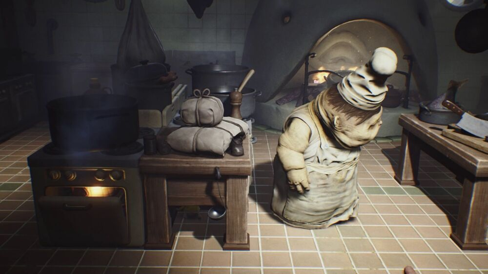

Climbing some bloody stairs and passing through some swinging traffic doors will bring Six to one more room filled with laundry carts. The smallest one can be pushed closer to the window leading to the pantry. Next to it is a corridor, and Six can safely enter the cooking area by crawling through a small doorway leading under some counters where lies a massive fish head.
